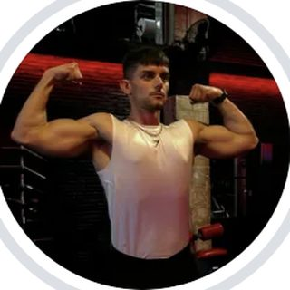
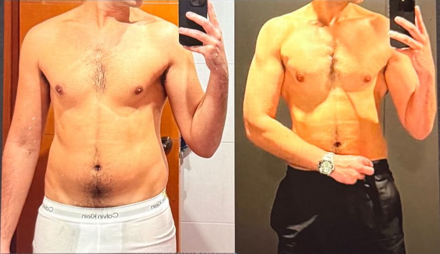
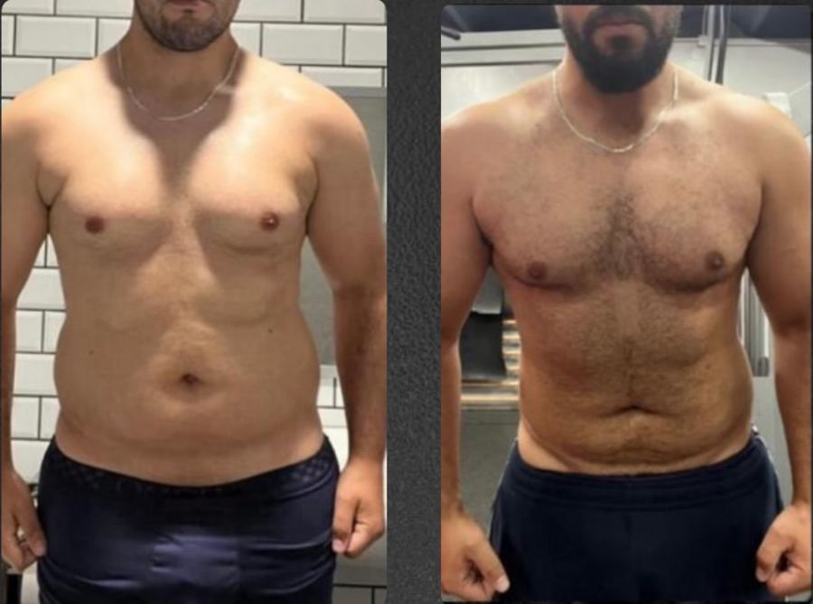
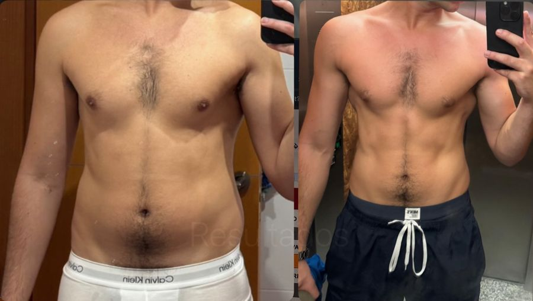
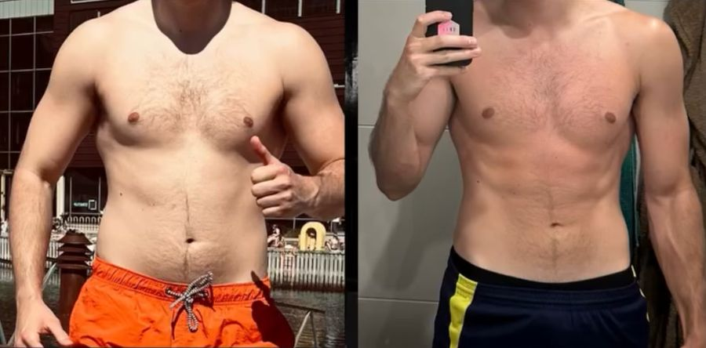
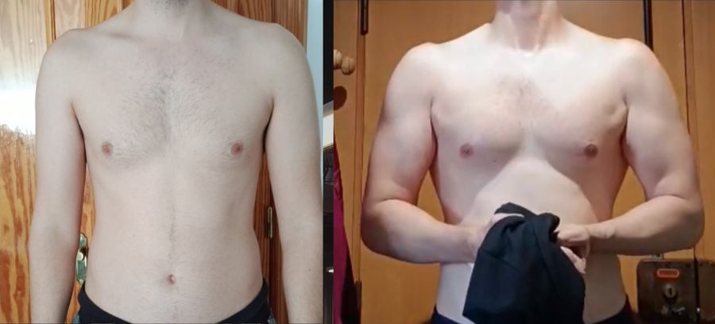
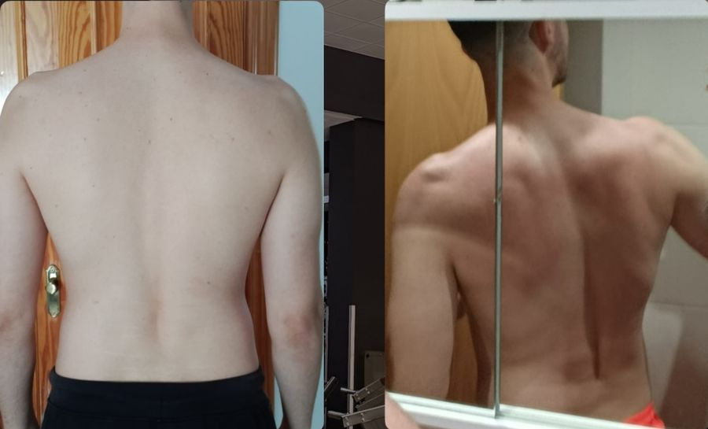
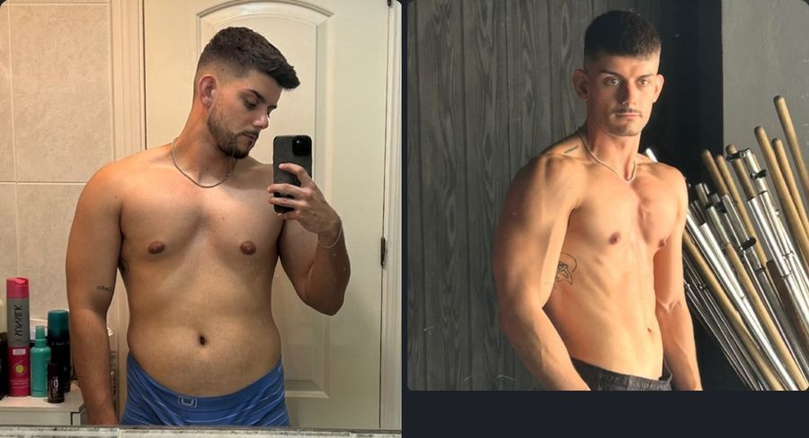

Entrenar mejor, no más
Estructura e intensidad por encima del volumen. Fuera las series basura: cada serie cuenta y queda apuntada. Por qué: entrené 5–6 días durante años y tardé 5 o 6 años en verme los abdominales.

Llevas años entrenando 5–6 días, con curro y estrés, y los abdominales no aparecen. No te falta esfuerzo: te falta estructura. Con el Método DR entrenas mejor, no más; descansas para rendir; y bajas grasa sin pasar hambre, comiendo lo que te gusta.
El formulario son 2 minutos. Lo reviso yo y te digo qué haría en tu caso.



No es tu genética. Es que entrenas sin estructura.
3 pilares, 3 fases y 3 no negociables. Un orden claro para dejar de dar vueltas entre volumen y definición.
Estructura e intensidad por encima del volumen. Fuera las series basura: cada serie cuenta y queda apuntada. Por qué: entrené 5–6 días durante años y tardé 5 o 6 años en verme los abdominales.
Duermes y recuperas para llegar a cada sesión con fuerza. Sin descanso, la intensidad no existe. Por qué: con lesiones de hombro y lumbar y durmiendo mal, cada definición acababa en sabotaje.
Comes lo que te gusta, dentro y fuera de casa, también el finde. Si pasas hambre, lo dejas. Por qué: en mis definiciones de hambre y sin verdura acababa en atracones.
Qué pasa: 4 sesiones con intensidad real y un déficit sin hambre; bajan los primeros kilos de grasa. Qué haces tú: cumplir y apuntar las 4 sesiones, dormir 7 horas y mandar tu revisión.
Qué pasa: subimos cargas con la tabla de progresión; ganas músculo mientras sigues bajando grasa. Qué haces tú: progresar en cada sesión y cumplir tus comidas el 80 % de la semana.
Qué pasa: afinamos hasta que se ven los abdominales y aprendes a mantenerlos comiendo de todo. Qué haces tú: aplicar lo aprendido y mantener las 4 sesiones.
4 sesiones a la semana con tabla de progresión, dormir 7 horas y una revisión semanal conmigo, sin fallar.
Trabajo, horarios, comidas fuera y estrés: el plan se construye alrededor de tu semana. Jose lo hizo con 4 días (2 en el gimnasio y 2 en casa) y un plan de comida flexible.
Clientes reales, con su antes y su después.
Con muchas complicaciones por una lesión, y aun así menos grasa y más músculo. Renovó 6 meses. Su objetivo: verse los abdominales.
Muy limitado por su trabajo. 4 días de entrenamiento (2 en el gimnasio y 2 en casa), plan de alimentación flexible y 12.000–15.000 pasos al día.
Cumplió y puso el trabajo: más músculo y menos grasa. Su respuesta en la revisión: "Físicamente hecho un toro, menos flotadores. Mentalmente más agresivo".

Toda la vida haciendo deporte: ciclismo, tenis, pádel y ahora gimnasio. Lo tenía todo; con unos ajustes en su alimentación, un cambio brutal en unos meses.

Manteniendo el porcentaje de grasa y con más masa muscular en general.

Ganando masa muscular de la forma más limpia posible, sin aumentar el porcentaje de grasa.

Cuando logras equilibrio en tu vida, los resultados llegan solos.
Físicamente hecho un toro, menos flotadores. Mentalmente más agresivo.Cliente DR TEAM · revisión semanal
Ya no tengo como entrenar una "obligación", ahora lo veo como algo que disfruto. Mi experiencia contigo como siempre un 10.Cliente DR TEAM · revisión semanal
Tardé 5 o 6 años en verme los abdominales. No me faltaba esfuerzo: me faltaba estructura.
Entrené durante años con una rutina Weider, 5 o 6 días a la semana, convencido de que más era mejor. Con una dieta de unas 1.500 kcal perdí 10 kg y me quedé flaco, pero sin abdominales: me faltaba músculo. Después recuperé esos 10 kg por mi cuenta.
Hice volúmenes sin control y llegué a los 95 kg. Y luego entré en lo que yo llamo un ciclo de definición interminable: tenía tanto miedo a verme delgado que me saboteaba cada vez que empezaba a bajar.
Lo que me cambió fue dejar de hacerlo solo: un plan con estructura, menos días y más intensidad, descanso de verdad y una dieta sin restricciones absurdas. Así llegué a mi mejor forma física, y así trabajo hoy con cada cliente.
"Un plan que se adapte a ti, no que tú tengas que adaptarte al plan."
Las condiciones exactas (cumplimiento y revisiones) se detallan en el contrato.
2 minutos en el formulario: cuánto llevas entrenando, cómo comes y qué has probado.
Si encajamos, hablamos y te digo exactamente qué está frenando tu progreso.
Tu fase 1 hecha para ti y la primera revisión fijada.
Lo reviso yo personalmente. Si encajamos, te escribo para hablar.
Casi siempre lo mismo que me pasó a mí: demasiado volumen sin intensidad, poco descanso y una dieta que no aguantas. Ordenamos eso y progresas de nuevo.
Sí. El plan se adapta a tus horarios. Jose, muy limitado por su trabajo, lo hizo con 4 días: 2 en el gimnasio y 2 en casa.
No. Nada de dietas restrictivas ni de vivir a pollo y arroz. Comes de todo, con un plan flexible que encaja en tu semana.
Es el miedo más habitual, y yo lo viví. Por eso va por fases: primero construimos y después revelamos, sin perder lo que has ganado.
Se adapta el entrenamiento. Juanca consiguió su cambio con muchas complicaciones por una lesión. Si algo necesita valoración médica, te lo digo.
No. Aprendes a encajarlo sin romper el plan. La clave es saber cuándo ser flexible y cuándo ser estricto.
Si cumples el plan y envías tus revisiones y en la fase 1 no ves cambios, seguimos trabajando gratis hasta que lleguen. Queda por escrito en el contrato.
Depende de tu caso y del plan que necesites. Rellena el formulario y te lo explico cuando hablemos.
O escríbeme PLAN por privado en @drr_fit y te contesto yo.